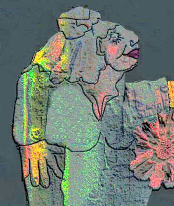

Editorial

Huzzah! The Shit Creek Review is two years (or eight issues) old in November, 2008. Although SCR began as an idle, immature facetious joke, and despite the dire predictions that its name would doom it, the canoe is still here, drifting aimlessly upstream, further and further into the deepest shit. SCR has survived the screechings of trolls from the jungle, massed assaults by zombie political brigadistas, medical emergencies, madness, melancholy, bribery charges brought against its CEO, flood, drought, the reefer madness of ‘08, and much more, far too dreadful to relate. Yet it is still here! Pat Jones’ ‘Goddess of Shit Creek’ (pictured above) adorned the cover of our very first issue, and the Goddess has watched over us ever since, although playing rather extreme and sometimes painful practical jokes on SCR staff from time to time. Long may she inspire us! (But we’d appreciate it if she’d ease up a little on the practical jokes.)
….
Tales from the Crypt
What moves men of genius, or rather what inspires their work, is not new ideas, but their obsession with the idea that what has already been said is still not enough
–Eugene Delacroix
No one need tell poets about obsession: obsession is not just an occupational hazard; it is a hard-wired, built-in, genetically inescapable part of their (usually quite odd) personalities. They have a godlike desire to create, though the need to be a Pygmalion and build a slave of servile words is never successful. The poet in fact creates a golem, becomes a Victor Frankenstein of the word by taking the cadavers of the mind and turns them into the stitched and mewling babes of rambling free verse, or the silent, procrustean denizens of the sonnet. Though perhaps, obsession comes most perversely in the form of mad relatives to these monsters: the rebarbative deformed cousin, the villanelle, or the shuttered-up mad grandmother of the pantoum.
The Shit Creek Review has always known and accepted that the act of creation is actually the act of ur-creation, with the page being the arena where the tumbling madness of the mind meets the ink and paper, or pixels, of the real world. There is interplay between them, and somewhere between the thought and the recording is where the poetry is lost or made, where the act of compromise between our darker thoughts and what might get you locked up for a short time, or indefinitely, ultimately resides. Essentially, there is always more to say not just because words are shifty characters who are always moving the goalposts of meaning, but because even if something was said perfectly, poets would want to keep checking other possibilities. Poetry is a neurosis: clean the house, wash the cat, clean the house, rub, rub, rub, rub.
This edition of our publication celebrates by splashing in the blood-puddles of the verse brought forth by this act of ur-creation; the very power or reason that drives poets to waste their time money, and sometimes their very lives in the pursuit of their mania. For what else could it be when poets say they ‘have to write’? Writing, writing, writing—it is an itch that cannot be scratched, and no matter how long this unholy madness leaves them, it always ultimately returns kicking and screaming to be released like Renfield raving in his cell. That is, unless the poet takes up an equally odd but more lucrative method of catharsis and becomes a novelist, like the psychopathic Fleming, and lets loose his monster onto the streets of fiction. Or else, they become serial killers, keeping victims in the fridge so they never leave; or more likely, committed to a padded room with blunt pencils and walls covered in odd glyphs and ciphers.
This edition brings such mad talent from around the world, and you, dear reader, are welcomed to come and poke around in this dark watercourse of obsessiveness, because in all odds, you’re just as deliciously obsessed about it yourself. The relationship between poet and poetry is so close that even those who don’t write poetry secretly wish to. Dive in, take the plunge and wallow in the weirdness. The Creek’s always lovely, lovely, lovely this time of year.
…
Cheers,
The Editors
….
Post Script: We are frightfully proud of Rose Kelleher, whose verse and prose, from issue #1 onwards, has often graced our paddleless canoe as we’ve drifted further and further up the Creek. Dear Reader, not only does Rose have a book forthcoming (Bundle o’ Tinder, which includes a number of poems first published in this Creekish journal), but she has won the Anthony Hecht Poetry Prize 2007, judged by Richard Wilbur! Onya, Rose!
…
Editors’ Compulsive Picks
Paul Stevens: I’m obsessing over Elizabeth Barbatos’ ‘Good Medicine’: I love the voice of it created by the syntax, imagery and line breaks. The synaesthestic imagery is used effectively to create this persona’s distorted mindset. It’s the sort of poem you can read over and over and over and over and over and over and over…
Angela France: Janice D Soderling’s ‘Cutting’: I admire the pace of it and how the syntax reflects the state of mind portrayed. I also like the sense of rising pitch throughout until the long sentence ends with a chilling stress on ‘knife’.
Patricia Wallace Jones: My editor’s choice is ’Etruscan Tomb: An Inventory’ by Andrew Frisardi. I have lived with Obsessive Compulsive Disorder for 34 years…over half my life…with a son whom I love dearly, and one who is seriously, but now and then humorously, obsessive /compulsive. We all have a bit of the disorder in us, I suspect, but OCD when full blown is a terribly disabling illness. One we would not wish on anyone. It is no surprise to me that I would choose this poem that made me smile and captures not only the orderliness of the disorder poetically, but the driven thoughts, cadence I often see/hear daily. This poem rings very true to me. My thanks to the poet for a poem I will remember.
Don Zirilli: These are the best poems we’ve published yet, but if I have to pick I’ll take Sally Clark’s ‘The Space Between’ because it just fits the space between my ears. Indeed, it takes the precise measurement of my regret, marks the depth of my love, paces out the distance of my memory, etc. Somewhere around 5 and a quarter inches.
Nigel Holt: Robin Helweg-Larsen’s ‘Fingerprint’. As usual I am drawn to the quite peculiar, the kind of poem that people like to pretend isn’t there in the family gathering — the odd little cousin with palsy, who nonetheless has a charm that can’t be ignored if only you give him the time. This poem is that. A little odd at first glance, but certainly well worth spending time with.
.
Best of the Net 2008 Nominations
‘Out of the Box’ by Alison Brackenbury — SCR #5, September 2007
‘Coots’ by Rick Roots — SCR #5, September 2007
‘In the Carriage Window’ by Stephen Payne — SCR #6, February 2008
‘Particles of Vera’ by Peter Wyton — SCR #6, February 2008
‘The Masked Ball’ by Charlotte Runcie — SCR #7, May 2008
‘Reflections’ by Jan Iwaszkiewicz — SCR #7, May 2008
…
Pushcart Prize 2008 Nominations
..
‘In the Carriage Window’ by Stephen Payne — SCR #6, February 2008
Reflections by Jan Iwaszkiewicz — SCR #7, May 2008
‘We Shall Entertain You’ by R. Nemo Hill — SCR #7, May 2008
‘The Masked Ball’ by Charlotte Runcie — SCR #7, May 2008
‘An Introduction to the Archetypes’ by Susan Slaviero — SCR #7 May 2008
‘Fingerprint’ by Robin Helweg-Larsen — SCR #8, October 2008
 |
|